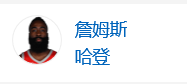
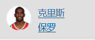
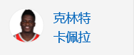
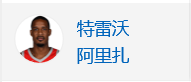
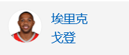

| 姓名 | 位置 | 身高 | 体重 | 球号 | 生日 | 经验 | 进入NBA值之前 |
| 大前/中锋 | 2米16 | 98.6公斤 | 9 | 1996-01-16 | 1 | China | |
|  | 后卫 | 1米96 | 99.8公斤 | 13 | 1989-08-26 | 9 | Arizona State/United States |
| 后卫 | 1米96 | 83.9公斤 | 2 | 1993-10-24 | 3 | Georgia State/United Stathhes | |
|  | 后卫 | 1.83 | 79.4公斤 | 3 | 1985-05-06 | 13 | Wake Forest/United States |
|  | 中锋 | 2米08 | 108.9公斤 | 15 | 1994-05-16 | 4 | Switzerland |
|  | 前锋-后卫 | 2米03 | 97.5公斤 | 1 | 1985-06-30 | 14 | UCLA/United States |
|  | 后卫 | 1米93 | 97.5公斤 | 10 | 1988-12-15 | 10 | Indiana/United States |
| 中锋-前锋 | 2米11 | 113.4公斤 | 42 | 1982-09-13 | 16 | Indiana/United States |